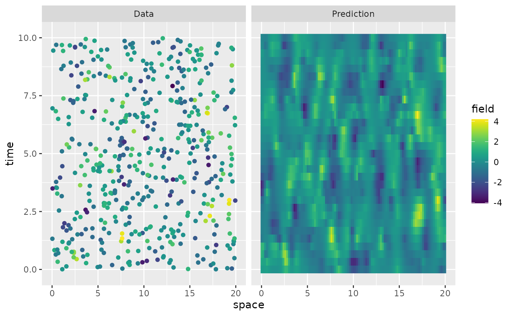
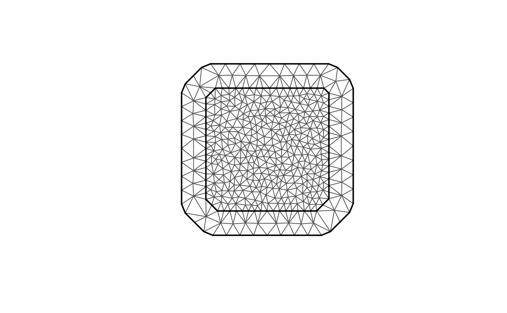
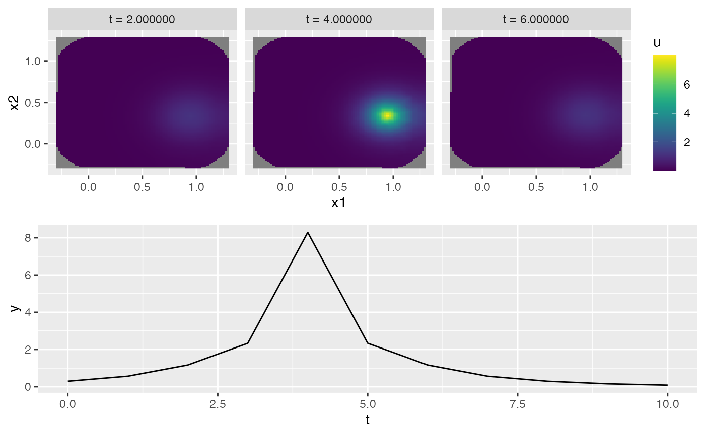

Spatio-temporal models
David Bolin and Alexandre B. Simas
Created: 2024-10-23. Last modified: 2024-11-03.
Source:vignettes/spacetime.Rmd
spacetime.RmdIntroduction
The rSPDE package implements the following
spatio-temporal model \[
d u + \gamma(\kappa^2 + \rho\cdot \nabla - \Delta)^{\alpha} u = dW_Q,
\quad \text{on } T\times D
\] where \(T\) is a temporal
interval and \(D\) is a spatial domain
which can be an interval, a bounded subset of \(\mathbb{R}^2\) or a metric graph. Here
\(\kappa>0\) is a spatial range
parameter, \(\rho\) is a drift
parameter which is in \(\mathbb{R}\)
for spatial domains that are intervals or metric graphs, and in \(\mathbb{R}^2\) for spatial domains which
are bounded subsets of \(\mathbb{R}^2\). Further, \(W_Q\) is a \(Q\)-Wiener process with spatial covariance
operator \(\sigma^2(\kappa^2 -
\Delta)^{-\beta}\), where \(\sigma^2\) is a variance parameter. Thus,
the model has two smoothness parameters \(\alpha\) and \(\beta\) which are assumed to be integers.
The model is therefore a generalization of the spatio-temporal models
introduced in Lindgren et al. (2024), where the
generalization is to allow for drift and to allow for metric graphs as
spatial domains. The model is implemented using a finite element
discretization of the corresponding precision operator \[
\sigma^{-2}(d + \gamma(\kappa^2 + \rho\cdot \nabla -
\Delta)^{\alpha})((d + \gamma(\kappa^2 - \rho\cdot \nabla -
\Delta)^{\alpha}))(\kappa^2 - \rho\cdot \nabla - \Delta)^{\beta}
\] in both space and time, similarly to the discretization
introduced in Lindgren et al. (2024).
Implementation details
Let us begin by loading some packages needed for making the plots
The function spacetime.operators() can be used to define
the model. The function requires specifying the two smoothness
parameters, and the discretization points for the spatial and temporal
discretizations. The spatial discretization can be specified through a
mesh object from the fmesher package, as a graph from the
MetricGraph package, or as the mesh nodes for models on
intervals. The temporal discretization can be specified either by
specifying the mesh nodes or by providing a mesh object.
Assume that we want to define a model on the spatial interval \([0,20]\) and the temporal domain \([0,10]\). We can then simply specify the mesh nodes as
We can now use spacetime.operators() to construct the
model
kappa <- 5
sigma <- 10
gamma <- 1/20
rho <- 1
alpha <- 1
beta <- 1
op <- spacetime.operators(space_loc = s, time_loc = t,
kappa = kappa, sigma = sigma, alpha = alpha,
beta = beta, rho = rho, gamma = gamma)The spacetime.operators object has a
plot_covariances method which for univariate spatial
domains simply plots the covariance \(C(u(s,t), u(s_0, t_0))\) for a fixed
spatio-temporal location \((s_0, t_0)\)
specified by the indices in the spatial and temporal discretizations.
For example:
op$plot_covariances(t.ind = 15, s.ind = 50)
 The object
The object op contains the matrices needed for evaluating
the model, and we have here initialized it by providing values for all
parameters.
We can simulate from the model using simulate():
u <- simulate(op)There is also built-in support for kriging prediction. To illustrate this, we use the simulation to create some noisy observations of the process. For this, we first construct the observation matrix linking the FEM basis functions to the locations where we want to simulate. We first randomly generate some observation locations and then construct the matrix.
n.obs <- 500
obs.loc <- data.frame(x = max(s)*runif(n.obs), t = max(t)*runif(n.obs))
A <- op$make_A(obs.loc$x, obs.loc$t)We now generate the observations as \(Y_i = u(s_i) + \varepsilon_i\), where \(\varepsilon_i \sim N(0,\sigma_e^2)\) is Gaussian measurement noise.
Finally, we compute the kriging prediction of the process \(u\) at the locations in s
based on these observations. To specify which locations that should be
predicted, the argument Aprd is used. This argument should
be an observation matrix that links the mesh locations to the prediction
locations.
Aprd <- op$make_A(rep(s, length(t)), rep(t, each = length(s)))
u.krig <- predict(op, A = A, Aprd = Aprd, Y = Y, sigma.e = sigma.e)The process simulation, and the kriging prediction are shown in the following figure.
data.df <- data.frame(space = obs.loc$x, time = obs.loc$t, field = Y, type = "Data")
krig.df <- data.frame(space = rep(s, length(t)), time = rep(t, each = length(s)),
field = as.vector(u.krig$mean), type = "Prediction")
df_plot <- rbind(data.df, krig.df)
ggplot(df_plot) + aes(x = space, y = time, fill = field) +
facet_wrap(~type) + geom_raster(data = krig.df) +
geom_point(data = data.df, aes(colour = field),
show.legend = FALSE) +
scale_fill_viridis() + scale_colour_viridis()
Parameter estimation
To estimate the model parameters based on this data, we can use the
our rspde_lme function or our inlabru
implementation. For this, we collect the data in a data frame, that also
contanis the spatial locations, and
df <- data.frame(y = as.matrix(Y), space = obs.loc$x, time = obs.loc$t)
rspde_lme implementation
We now fit the model:
res <- rspde_lme(y ~ 1, loc = "space", loc_time = "time", data = df, model = op, parallel = TRUE)In the call, y~1 indicates that we also want to estimate
a mean value of the model, and the arguments loc and
loc_time provides the names of the spatial and temporal
coordinates in the data frame. Let us see a summary of the fitted
model:
summary(res)
#>
#> Latent model - Spatio-temporal with alpha = 1 , beta = 1
#>
#> Call:
#> rspde_lme(formula = y ~ 1, loc = "space", loc_time = "time",
#> data = df, model = op, parallel = TRUE)
#>
#> Fixed effects:
#> Estimate Std.error z-value Pr(>|z|)
#> (Intercept) -0.0234 0.1072 -0.218 0.827
#>
#> Random effects:
#> Estimate Std.error z-value
#> kappa 4.852946 0.428216 11.333
#> sigma 9.581684 0.904299 10.596
#> gamma 0.056101 0.005151 10.891
#> rho 0.204959 0.256682 0.798
#>
#> Measurement error:
#> Estimate Std.error z-value
#> std. dev 2.046e-06 5.528e-07 3.701
#> ---
#> Signif. codes: 0 '***' 0.001 '**' 0.01 '*' 0.05 '.' 0.1 ' ' 1
#>
#> Log-Likelihood: -630.5556
#> Number of function calls by 'optim' = 83
#> Optimization method used in 'optim' = L-BFGS-B
#>
#> Time used to: fit the model = 7.38193 secs
#> set up the parallelization = 10.16543 secsLet us compare the estimated results with the true values:
results <- data.frame(kappa = c(kappa, res$coeff$random_effects[1]),
sigma = c(sigma, res$coeff$random_effects[2]),
gamma = c(gamma, res$coeff$random_effects[3]),
rho = c(rho, res$coeff$random_effects[4]),
sigma.e = c(sigma.e, res$coeff$measurement_error),
intercept = c(0, res$coeff$fixed_effects),
row.names = c("True", "Estimate"))
print(results)
#> kappa sigma gamma rho sigma.e intercept
#> True 5.000000 10.000000 0.05000000 1.0000000 1.000000e-02 0.00000000
#> Estimate 4.852946 9.581684 0.05610139 0.2049592 2.045553e-06 -0.02340119Finally, we can also do prediction based on the fitted model as
pred.data <- data.frame(x = rep(s,length(t)), t = rep(t,each=length(s)))
pred <- predict(res, newdata = pred.data, loc = "x", time = "t")
data.df <- data.frame(space = obs.loc$x, time = obs.loc$t, field = Y, type = "Data")
krig.df <- data.frame(space = rep(s, length(t)), time = rep(t, each = length(s)),
field = as.vector(pred$mean), type = "Prediction")
df_plot <- rbind(data.df, krig.df)
ggplot(df_plot) + aes(x = space, y = time, fill = field) +
facet_wrap(~type) + geom_raster(data = krig.df) +
geom_point(data = data.df, aes(colour = field),
show.legend = FALSE) +
scale_fill_viridis() + scale_colour_viridis()
inlabru Implementation
Let us now fit the model using our inlabru
implementation. We start by creating the model object with the
rspde.spacetime() function:
library(inlabru)
#> Loading required package: fmesher
st_bru <- rspde.spacetime(space_loc = s, time_loc = t, alpha = 1, beta=1)We now create the model component, which requires the user to pass
the index as a list containing the elements space with the
spatial indices and time with the temporal indices:
cmp <- y ~ 1 + field(list(space=space, time = time), model = st_bru)We are now in a position to fit the model:
Let us now compare the estimated results (the means of the parameters) with the true values:
results <- data.frame(kappa = c(kappa, exp(bru_fit$summary.hyperpar$mean[2])),
sigma = c(sigma, exp(bru_fit$summary.hyperpar$mean[3])),
gamma = c(gamma, exp(bru_fit$summary.hyperpar$mean[4])),
rho = c(rho, bru_fit$summary.hyperpar$mean[5]),
sigma.e = c(sigma.e, sqrt(1/bru_fit$summary.hyperpar$mean[1])),
intercept = c(0, bru_fit$summary.fixed$mean),
row.names = c("True", "Estimate"))
print(results)
#> kappa sigma gamma rho sigma.e intercept
#> True 5.000000 10.000000 0.0500000 1.0000000 0.0100000 0.0000000
#> Estimate 4.780176 9.480704 0.0576051 -0.1384608 0.0061671 -0.0217417A spatial example
Let us now illustrate how to implement a spatial version. We start by
creating a region of interest and a spatial mesh using the
fmesher package:
library(fmesher)
n_loc <- 2000
loc_2d_mesh <- matrix(runif(n_loc * 2), n_loc, 2)
mesh_2d <- fm_mesh_2d(
loc = loc_2d_mesh,
cutoff = 0.05,
max.edge = c(0.1, 0.5)
)
plot(mesh_2d, main = "")
We now proceed as previously by defining a temporal region and the model
t <- seq(from = 0, to = 10, length.out = 11)
kappa <- 10
sigma <- 10
gamma <- 1/200
rho <- 1*c(1,1)
alpha <- 1
beta <- 1
op <- spacetime.operators(mesh_space = mesh_2d, time_loc = t,
kappa = kappa, sigma = sigma, alpha = alpha,
beta = beta, rho = rho, gamma = gamma)
op$plot_covariances(s.ind = 100, t.ind = 5, t.shift = c(-2,0,2))
#> TableGrob (2 x 1) "arrange": 2 grobs
#> z cells name grob
#> 1 1 (1-1,1-1) arrange gtable[layout]
#> 2 2 (2-2,1-1) arrange gtable[layout]
#> TableGrob (2 x 1) "arrange": 2 grobs
#> z cells name grob
#> 1 1 (1-1,1-1) arrange gtable[layout]
#> 2 2 (2-2,1-1) arrange gtable[layout]The spacetime.operators object has a
plot_covariances method which can be used to vizualise
marginal spatial and temporal covariances. The function takes as input
t.ind which is the index of the location in the time
discretization to plot the marginal spatial covariance for, and an input
s.ind which is the index of the location in the space
discretization to show the marginal temporal covariance for. It further
takes an input t.shift which can be used to plot
covariances \(C(u(\cdot, t_i), u(\cdot,
t_j)\), where \(t_i\) is
t[t.ind] and \(t_j\) is
t[t.ind + t.shift]. For example
We can simulate from the model using simulate():
u <- simulate(op)Let us plot the simulation for a few time points
proj <- fm_evaluator(mesh_2d, dims = c(100, 100))
U <- matrix(u, nrow = mesh_2d$n, ncol = length(t))
field1 <- fm_evaluate(proj, field = as.vector(U[,2]))
field2 <- fm_evaluate(proj, field = as.vector(U[,3]))
field3 <- fm_evaluate(proj, field = as.vector(U[,4]))
field1.df <- data.frame(x1 = proj$lattice$loc[,1], x2 = proj$lattice$loc[,2],
u = as.vector(field1), type = "u1")
field2.df <- data.frame(x1 = proj$lattice$loc[,1], x2 = proj$lattice$loc[,2],
u = as.vector(field2), type = "u2")
field3.df <- data.frame(x1 = proj$lattice$loc[,1], x2 = proj$lattice$loc[,2],
u = as.vector(field3), type = "u3")
field.df <- rbind(field1.df, field2.df, field3.df)
ggplot(field.df) + aes(x = x1, y = x2, fill = u) + facet_wrap(~type) + geom_raster() + xlim(0,1) + ylim(0,1) + scale_fill_viridis()
#> Warning: Removed 18468 rows containing missing values or values outside the scale range
#> (`geom_raster()`).
We now generate the observations as \(Y_i = u(s_i) + \varepsilon_i\), where \(\varepsilon_i \sim N(0,\sigma_e^2)\) is Gaussian measurement noise.
n.obs <- 500
obs.loc <- data.frame(x = runif(n.obs),y = runif(n.obs), t = max(t)*runif(n.obs))
A <- op$make_A(cbind(obs.loc$x,obs.loc$y), obs.loc$t)
sigma.e <- 0.01
Y <- as.vector(A%*%u + sigma.e*rnorm(n.obs))To estimate the model parameters based on this data, we can use the
rspde_lme function. For this, we collect the data in a data
frame, that also contanis the spatial locations, and we fit the
model:
df <- data.frame(Y = as.matrix(Y), x = obs.loc$x, y = obs.loc$y, t = obs.loc$t)
res <- rspde_lme(Y ~ 1, loc = c("x", "y"), loc_time = "t", data = df, model = op, parallel = TRUE)
#> Warning in rspde_lme(Y ~ 1, loc = c("x", "y"), loc_time = "t", data = df, : The
#> optimization failed to provide a numerically positive-definite Hessian. You can
#> try to obtain a positive-definite Hessian by setting 'improve_hessian' to TRUE
#> or by setting 'parallel' to FALSE, which allows other optimization methods to
#> be used.
#> Warning in sqrt(diag(inv_fisher)): NaNs producedLet us see a summary of the fitted model:
summary(res)
#>
#> Latent model - Spatio-temporal with alpha = 1 , beta = 1
#>
#> Call:
#> rspde_lme(formula = Y ~ 1, loc = c("x", "y"), loc_time = "t",
#> data = df, model = op, parallel = TRUE)
#>
#> Fixed effects:
#> Estimate Std.error z-value Pr(>|z|)
#> (Intercept) -0.1775 0.3924 -0.452 0.651
#>
#> Random effects:
#> Estimate Std.error z-value
#> kappa 1.054e+01 8.818e-01 11.949
#> sigma 1.097e+01 1.370e+00 8.007
#> gamma 5.084e-03 7.795e-04 6.521
#> rho 2.838e+00 2.554e+01 0.111
#> NA 2.552e+00 1.904e+00 1.340
#>
#> Measurement error:
#> Estimate Std.error z-value
#> std. dev 4.349e-05 NaN NaN
#> ---
#> Signif. codes: 0 '***' 0.001 '**' 0.01 '*' 0.05 '.' 0.1 ' ' 1
#>
#> Log-Likelihood: -838.0166
#> Number of function calls by 'optim' = 42
#> Optimization method used in 'optim' = L-BFGS-B
#>
#> Time used to: fit the model = 2.63665 mins
#> set up the parallelization = 18.41732 secsLet us compare the estimated results with the true values:
results <- data.frame(kappa = c(kappa, res$coeff$random_effects[1]),
sigma = c(sigma, res$coeff$random_effects[2]),
gamma = c(gamma, res$coeff$random_effects[3]),
rho_1 = c(rho[1], res$coeff$random_effects[4]),
rho_2 = c(rho[2], res$coeff$random_effects[5]),
sigma.e = c(sigma.e, res$coeff$measurement_error),
intercept = c(0, res$coeff$fixed_effects),
row.names = c("True", "Estimate"))
print(results)
#> kappa sigma gamma rho_1 rho_2 sigma.e intercept
#> True 10.00000 10.00000 0.005000000 1.000000 1.000000 1.00000e-02 0.0000000
#> Estimate 10.53699 10.96938 0.005083479 2.838446 2.551765 4.34937e-05 -0.1774789Let us now use our inlabru implementation. We first
define the model. To this end we need to create a mesh for the time
object:
mesh_time <- fmesher::fm_mesh_1d(t)
st_bru_field <- rspde.spacetime(mesh_space = mesh_2d,
mesh_time = mesh_time, alpha = alpha, beta = beta)Let us now prepare the data.frame object:
library(sp)
df_bru <- data.frame(y = Y, coord_x = obs.loc$x, coord_y = obs.loc$y, time = obs.loc$t)Now, the component:
We are now in a position to fit the model:
Let us now compare the estimated results (the means of the parameters) with the true values:
results <- data.frame(kappa = c(kappa, exp(bru_fit_field$summary.hyperpar$mean[2])),
sigma = c(sigma, exp(bru_fit_field$summary.hyperpar$mean[3])),
gamma = c(gamma, exp(bru_fit_field$summary.hyperpar$mean[4])),
rho_1 = c(rho[1], bru_fit_field$summary.hyperpar$mean[5]),
rho_2 = c(rho[2], bru_fit_field$summary.hyperpar$mean[6]),
sigma.e = c(sigma.e, sqrt(1/bru_fit_field$summary.hyperpar$mean[1])),
intercept = c(0, bru_fit_field$summary.fixed$mean),
row.names = c("True", "Estimate"))
print(results)
#> kappa sigma gamma rho_1 rho_2 sigma.e
#> True 10.00000 10.00000 0.005000000 1.000000 1.000000 1.000000e-02
#> Estimate 11.13258 13.85631 0.006607039 2.202507 1.001405 6.208439e-06
#> intercept
#> True 0.00000000
#> Estimate -0.05464562